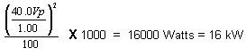

Table 4: RF POWER CALCULATION WITH NO LOSS
 Assume Z = 50 Ω, Vpeak = 40.0, scope correction factor = 1.00
(no loss), dummy load and cables atten. = 1000, (dummy load and cables are
all ideal) Assume Z = 50 Ω, Vpeak = 40.0, scope correction factor = 1.00
(no loss), dummy load and cables atten. = 1000, (dummy load and cables are
all ideal) |
| NOTE: | THE SCOPE CORRECTION FACTOR MUST BE KNOWN FOR THE FORMULAE SHOWN IN Table 4 AND Table 5. IF IT IS NOT KNOWN, DO NOT USE THIS METHOD. GROSSLY INACCURATE MEASUREMENTS AND POSSIBLE SYSTEM DAMAGE WILL RESULT. |
Table 4: RF POWER CALCULATION WITH NO LOSS
| Assume Z = 50 Ω, Vpeak = 40.0, scope correction factor = 1.00
(no loss), dummy load and cables atten. = 1000, (dummy load and cables are
all ideal)  |